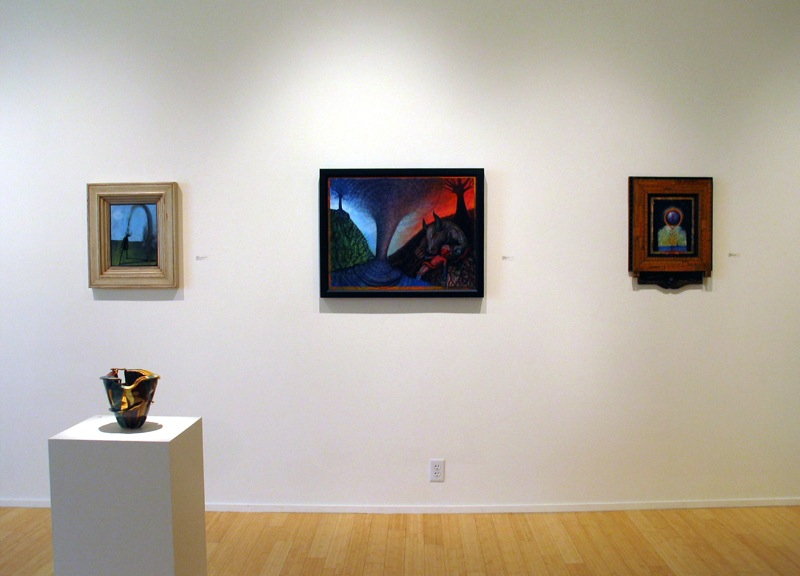
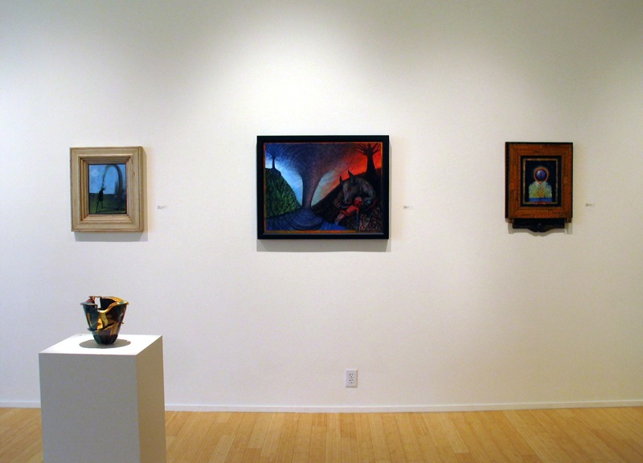

To support our mission, we ensure that our gallery nurtures and promotes the work of diverse visual and cultural artists in San Antonio; Fosters artistic excellence and intergenerational and multicultural understanding and awareness; creates community between seniors enrolled in the GO! Arts program, area established and emerging artists, members of surrounding neighborhoods, and the global art culture; and builds collaborations with other cultural and social service organizations to maximize access to collective resources.
Gallery Hours
Monday - Friday, 9am-6pm